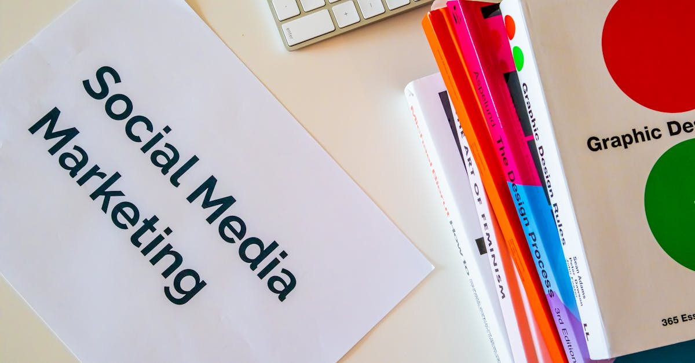

L'Ascension Fulgurante de Clavicular : Un Phénomène Numérique
Dans le paysage numérique saturé d'aujourd'hui, émerger et capter l'attention du public relève du parcours du combattant. Pourtant, un nom résonne avec une force particulière : Clavicular. Ses apparitions, devenues omniprésentes sur les plateformes sociales, ne laissent personne indifférent. Son visage aux traits ciselés, sa silhouette athlétique, tout concourt à une image soignée, voire magnifiée. Mais derrière cette perfection apparente se cache une stratégie de diffusion d'une efficacité redoutable, orchestrée par des mécanismes qui dépassent la simple publication de contenu. L'omniprésence de ses clips, souvent courts et percutants, interroge : comment un individu parvient-il à saturer l'espace médiatique avec une telle constance ? La réponse réside, en partie, dans l'exploitation sophistiquée d'outils et de techniques qui exploitent les algorithmes et les tendances de consommation de contenu. Cette méthode, loin d'être fortuite, s'apparente à une véritable mécanique de la viralité, où chaque élément est calculé pour maximiser l'impact et la diffusion. Il ne s'agit plus seulement de créer du contenu, mais de le disséminer stratégiquement, un peu comme un produit financier serait optimisé pour un rendement maximal. Cette approche soulève des questions fondamentales sur la nature de la célébrité à l'ère numérique et le rôle croissant des technologies dans sa construction.
👉 À lire : IA et Géopolitique : Leçons pour l'Épargne Intelligente
La Machine à Clips : L'IA au Service de la Viralité
Au cœur du succès de Clavicular se trouve un système ingénieux, surnommé la 'Video Clipping Machine'. Loin d'être une simple compilation, ce dispositif utilise des algorithmes avancés pour identifier, découper et diffuser des fragments de vidéos de manière stratégique. L'objectif est clair : maximiser la visibilité et l'engagement. Imaginez un système capable d'analyser des heures de contenu pour en extraire les moments les plus percutants, ceux qui retiennent l'attention dans le flux incessant des réseaux sociaux. Cette machine ne se contente pas de couper des vidéos ; elle les optimise pour chaque plateforme, en tenant compte des formats, des durées idéales et des heures de publication les plus propices à l'engagement. C'est une forme d'automatisation poussée, où l'intelligence artificielle joue un rôle central dans la curation et la diffusion du contenu. Elle apprend des réactions du public, affine ses choix et ajuste sa stratégie en temps réel. Cette approche rappelle la manière dont les algorithmes financiers analysent les marchés pour identifier les meilleures opportunités d'investissement, cherchant constamment à optimiser le rendement. Dans le cas de Clavicular, le 'rendement' est la viralité et l'influence. La capacité de cette machine à générer un flux constant de clips engageants permet de maintenir une présence médiatique constante, rendant l'influenceur 'inescapable'. C'est une illustration saisissante de la manière dont l'IA peut être appliquée pour atteindre des objectifs spécifiques, même dans des domaines aussi apparemment subjectifs que la création de célébrité.
👉 À lire : Deutsche Telekom et l'IA : Un deal historique pour l'épargne ?
Le 'Looksmaxxing' : Quand l'Esthétique Rencontre la Technologie
Le phénomène Clavicular ne se limite pas à la diffusion de ses vidéos. Son image personnelle, méticuleusement construite, est un élément clé de son succès. Le terme 'looksmaxxing', popularisé dans certaines communautés en ligne, décrit un processus d'amélioration esthétique radical, souvent à l'aide de méthodes extrêmes. Clavicular, dans sa démarche, semble avoir poussé cette tendance à son paroxysme. Les descriptions font état de régimes incluant des injections de testostérone, voire des pratiques plus controversées comme des tapotements du visage à l'aide d'un marteau, visant à remodeler les traits. Cette quête d'une perfection physique, amplifiée par la diffusion numérique, soulève des questions éthiques et psychologiques profondes. Jusqu'où peut aller l'individu dans la modification de son apparence pour correspondre à des idéaux, souvent irréalistes, promus en ligne ? L'IA, dans ce contexte, ne se contente pas de diffuser ; elle contribue à façonner les standards de beauté et les aspirations individuelles. Les algorithmes, en mettant en avant certains types de contenus et d'apparences, peuvent indirectement influencer les comportements et les choix des utilisateurs. Cette synergie entre l'amélioration physique et la diffusion technologique crée une boucle de rétroaction complexe, où l'image projetée devient le moteur de sa propre amplification. Il est fascinant d'observer comment des outils technologiques, initialement conçus pour d'autres usages, peuvent être détournés pour servir des objectifs aussi personnels et, parfois, extrêmes.

L'IA et la Construction de l'Identité Numérique
Au-delà de la simple célébrité, le cas Clavicular met en lumière la puissance de l'intelligence artificielle dans la construction et la gestion de l'identité numérique. Les outils d'IA ne se limitent plus à l'analyse de données ou à l'automatisation de tâches ; ils deviennent des partenaires dans la création d'une persona en ligne. La 'Video Clipping Machine' n'est qu'un exemple. D'autres IA peuvent être utilisées pour générer des légendes percutantes, suggérer les meilleurs hashtags, analyser les tendances pour anticiper les sujets d'intérêt, voire même créer des avatars ou modifier des images pour affiner l'apparence. Pour un individu cherchant à maximiser son influence, comme Clavicular, ces outils offrent une efficacité redoutable. Ils permettent de gérer une présence en ligne de manière quasi-autonome, libérant du temps pour d'autres activités, tout en assurant une optimisation constante de la diffusion et de l'engagement. Cette automatisation de la gestion de l'image rappelle la manière dont les plateformes d'investissement automatisé, comme celles que nous promouvons sur Epargne IA, utilisent des algorithmes pour optimiser les portefeuilles d'épargne 24h/24. Dans les deux cas, il s'agit d'exploiter la puissance des algorithmes pour atteindre des objectifs prédéfinis avec une efficacité et une constance inégalées. L'identité numérique, autrefois façonnée par des interactions humaines directes, devient de plus en plus le fruit d'une collaboration, parfois inconsciente, entre l'individu et des systèmes intelligents.
Les Implications Éthiques : Entre Optimisation et Manipulation
L'efficacité de la 'Video Clipping Machine' et la stratégie de 'looksmaxxing' de Clavicular soulèvent des questions éthiques fondamentales. D'une part, l'utilisation de l'IA pour optimiser la diffusion de contenu peut être vue comme une évolution naturelle du marketing et de la communication. Elle permet d'atteindre un public plus large, de manière plus ciblée et efficace. C'est une forme d'optimisation des ressources, comparable à la manière dont un investisseur utilise des outils d'analyse pour maximiser ses rendements. D'autre part, cette puissance ouvre la porte à des dérives potentielles. La saturation médiatique peut devenir une forme de manipulation, où l'individu est bombardé de contenu visant à influencer ses perceptions et ses comportements. La quête de perfection physique, encouragée par une image numérique idéalisée et potentiellement retouchée par l'IA, peut engendrer des complexes et des insatisfactions chez le public, en particulier chez les plus jeunes. De plus, l'utilisation de méthodes extrêmes pour atteindre cet idéal soulève des préoccupations quant à la santé et au bien-être des individus. Il est crucial de trouver un équilibre entre l'exploitation des technologies pour accroître l'efficacité et le respect de l'intégrité physique et psychologique des personnes. La transparence sur l'utilisation des outils d'IA dans la création de contenu et la promotion d'images devient alors primordiale, tout comme la sensibilisation aux potentiels effets négatifs.

La Saturation Médiatique : Une Stratégie à Double Tranchant
L'omniprésence des clips de Clavicular sur les réseaux sociaux est le résultat d'une stratégie de saturation médiatique calculée. En inondant les flux d'actualités avec un contenu régulier et optimisé par l'IA, l'objectif est de devenir incontournable. Cette tactique peut être très efficace pour construire rapidement une notoriété et une base de fans fidèles. Chaque clip, minutieusement sélectionné et diffusé, agit comme une petite piqûre de rappel, maintenant l'influenceur dans l'esprit du public. C'est une approche qui rappelle la nécessité d'une présence constante et pertinente dans le monde de l'investissement. Pour que votre épargne soit optimisée, il faut une surveillance et des ajustements réguliers, idéalement automatisés pour ne manquer aucune opportunité. Cependant, cette saturation peut aussi se retourner contre l'influenceur. Un excès de contenu, même s'il est de qualité, peut entraîner une lassitude du public. Les utilisateurs, submergés, peuvent développer une forme d'indifférence, voire d'agacement. Le risque est de passer du statut d'influenceur admiré à celui de simple bruit de fond numérique. De plus, la perception de l'authenticité peut être compromise. Une présence trop parfaite et trop constante peut sembler artificielle, suscitant la méfiance plutôt que l'adhésion. Le défi pour Clavicular, et pour tous ceux qui utilisent des stratégies similaires, est de trouver le juste milieu : être visible sans être envahissant, engager sans lasser, et maintenir une connexion authentique avec son audience malgré l'automatisation du processus.
L'Impact sur les Tendances et la Culture Pop
Le succès viral d'une figure comme Clavicular, propulsé par des outils d'IA, ne manque pas d'influencer les tendances et la culture populaire. Les algorithmes, en identifiant et en amplifiant ce qui fonctionne, créent des cycles de rétroaction qui peuvent rapidement façonner les normes et les attentes. L'esthétique particulière de Clavicular, le 'looksmaxxing', et la manière dont son contenu est diffusé, peuvent inspirer d'autres créateurs de contenu et même influencer les standards de beauté perçus. Pensez à la manière dont les tendances financières évoluent : une stratégie d'investissement qui montre des résultats peut rapidement être adoptée par de nombreux acteurs, modifiant le paysage global. Ici, c'est la culture populaire qui est modifiée. Les jeunes générations, particulièrement sensibles aux phénomènes viraux et aux modèles proposés sur les réseaux sociaux, peuvent intégrer ces nouvelles normes dans leur propre perception d'eux-mêmes et de leurs aspirations. L'IA, en tant que moteur de cette diffusion et de cette amplification, joue un rôle clé dans la définition de ce qui est considéré comme désirable ou pertinent. Il est fascinant d'observer comment une technologie peut, indirectement, remodeler nos goûts, nos préférences, et même nos idéaux. Cela souligne l'importance de développer un esprit critique face aux contenus que nous consommons, et de comprendre les mécanismes qui les rendent si omniprésents. La capacité de l'IA à identifier et à exploiter des niches d'intérêt est sans précédent, et son impact sur la culture est encore en train de se déployer pleinement.
Vers une Nouvelle Ère de la Célébrité Automatisée ?
Le cas Clavicular, avec sa 'Video Clipping Machine' et sa stratégie de 'looksmaxxing' optimisée, pourrait bien être le précurseur d'une nouvelle ère : celle de la célébrité automatisée. L'intelligence artificielle offre des outils de plus en plus sophistiqués pour construire, gérer et amplifier une présence en ligne. La capacité d'analyser des données, de prédire les tendances, de générer du contenu et d'optimiser sa diffusion à grande échelle ouvre des perspectives inédites pour ceux qui cherchent à devenir des influenceurs ou des personnalités publiques. Imaginez des systèmes capables non seulement de découper des vidéos, mais aussi de créer des narrations personnalisées, d'interagir avec les fans de manière quasi-autonome, et d'adapter la stratégie de marque en temps réel. Cela soulève une question fondamentale : quelle sera la place de l'humain dans ce processus ? Si l'IA peut gérer une grande partie de la mécanique de la célébrité, qu'est-ce qui distinguera encore un influenceur 'authentique' d'un produit savamment orchestré par des algorithmes ? Peut-être résidera-t-elle dans la capacité à injecter une véritable personnalité, une vulnérabilité assumée, ou une connexion émotionnelle profonde que même l'IA la plus avancée peinerait à simuler. L'analogie avec l'épargne intelligente est frappante : l'IA optimise, automatise, et rend l'accès à des stratégies performantes plus facile. Mais la décision finale, la vision à long terme, et la compréhension des risques, restent souvent l'apanage de l'humain. La célébrité de demain sera peut-être un partenariat complexe entre l'humain et la machine.
Conclusion : L'IA, un Outil Puissant aux Multiples Facettes
Le phénomène Clavicular illustre de manière frappante la puissance et la polyvalence de l'intelligence artificielle dans le monde contemporain. De la création et diffusion optimisée de contenu grâce à la 'Video Clipping Machine' à l'influence sur les standards esthétiques via le 'looksmaxxing', l'IA est au cœur de stratégies qui redéfinissent la manière dont la célébrité est construite et maintenue. Si ces outils offrent des opportunités sans précédent pour accroître l'efficacité et la portée, ils soulèvent également des questions éthiques importantes concernant la manipulation, l'authenticité et l'impact sur la santé mentale et la perception de soi. Comme dans le domaine de l'épargne et de l'investissement, où l'IA permet une optimisation 24h/24 et une prise de décision basée sur des données complexes, il est essentiel d'aborder ces technologies avec discernement. Comprendre leur fonctionnement, leurs bénéfices potentiels, mais aussi leurs limites et les risques associés, est la clé pour naviguer dans cet environnement numérique en constante évolution. L'avenir verra probablement une intégration encore plus poussée de l'IA dans la création de personnalités publiques, faisant de la collaboration homme-machine un élément central de la célébrité de demain. Il nous appartient, en tant qu'utilisateurs et observateurs, de rester vigilants, critiques, et d'encourager une utilisation responsable et bénéfique de ces technologies révolutionnaires.